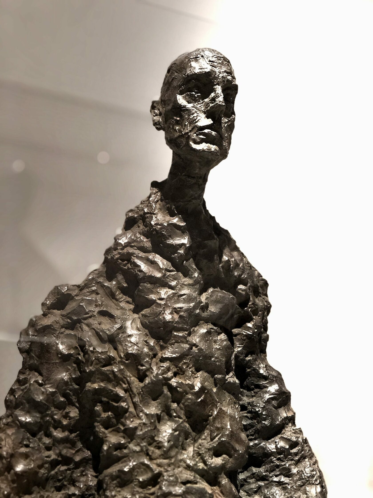
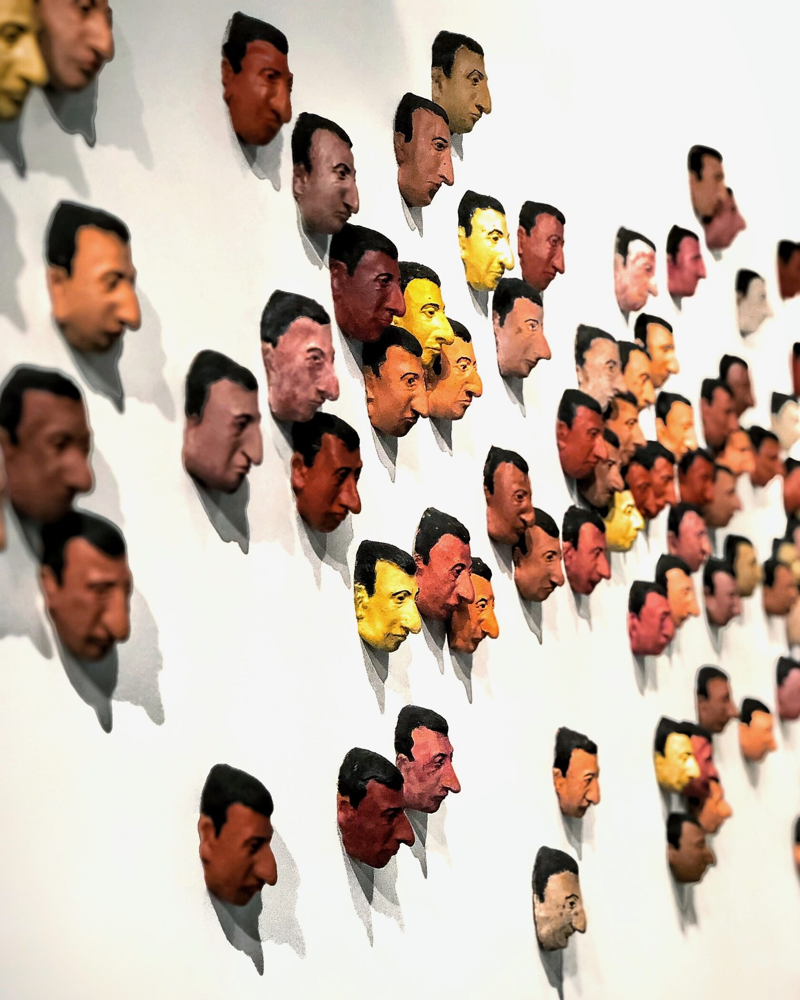
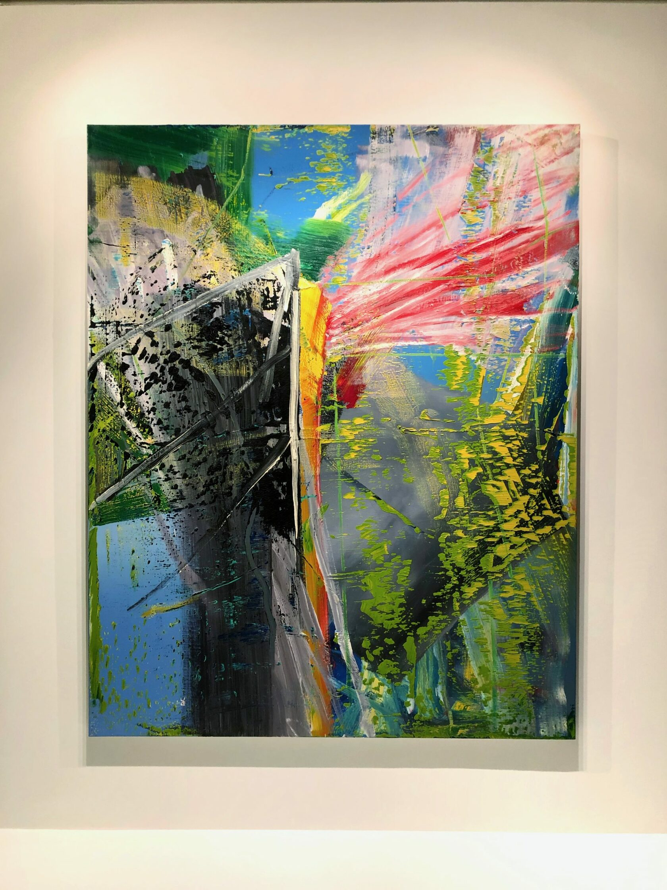
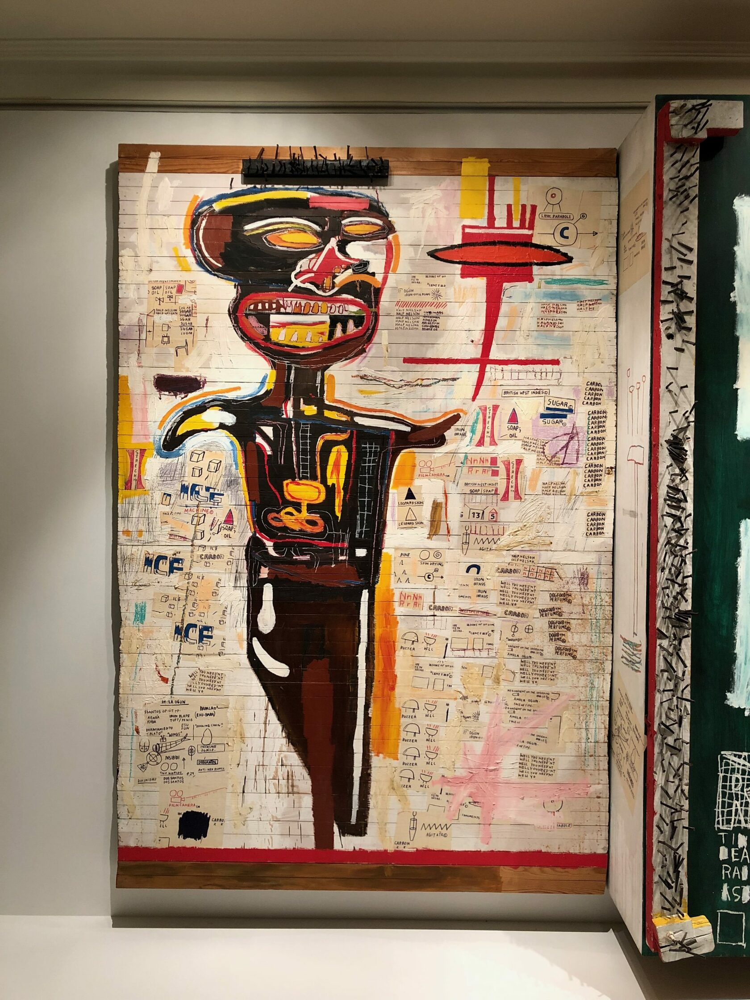

Сталкиваясь с современным искусством, мы часто думаем, что это какая-то фигня. Бывает, конечно, и так. Но… далеко не всегда. Трансформация форм и расширение границ в искусстве 20 века, рождение новых творческих практик, переоценка критериев признания — всё это привело на сегодняшний день к чудовищному непониманию большинством людей того, что происходит в искусстве, и почему. А происходит простая (и одновременно сложная) вещь — рождение на наших глазах нового «языка».
Не то, чтобы есть единственно верный ответ на это «почему». Но, по крайней мере, попытка разобраться, опираясь на взгляд «с высоты птичьего полета» и на факты истории — позволяет сформировать свое собственное аргументированное отношение к теме современного искусства и воспринимать его без предубеждения.
Многие вещи в современном искусстве бывают нам непонятны не потому, что мы тупые, а просто в силу имплицитности (скрытости) кодов иной культурной среды. А ещё потому, что чаще всего мы, люди, мыслим прошлым или сиюминутным, а художник — будущим или сакральным. Вот и случается такой своеобразный «временнОй» и ценностный диссонанс. Впрочем, он вполне преодолим, достаточно лишь перешагнуть границы привычного горизонта событий.
К тому же, проблема понимания современного искусства — это не исключительная проблема сегодняшнего дня, она существовала всегда (хотя, надо сказать что сегодня всё же особая ситуация). Вот, скажем, для нас не существует проблемы искусства, например, XIX века. Нам кажется, что все, созданное тогда, было талантливым и прекрасным, ну так, с обывательской точки зрения. Но это потому, что, во-первых, наш глаз уже привык «правильно» видеть. А во-вторых, мы не лицезрели весь объем созданного в то время, а имеем только сухой остаток, когда время уже сделало свою работу. В определенном смысле искусство сегодняшнее современно не нам, а тем, кто будет после нас, когда у них тоже останется только сухой остаток, потому что время расставит все по своим местам. Да, всякой ерунды и откровенного дерьма сейчас очень много, впрочем как во все времена — просто мы об этом забыли.
Иначе говоря, понять что-то в формирующемся на наших глазах явлении можно либо ретроспективно (что нам сейчас недоступно, машину времени еще никто не изобрел), либо… через погружение в саму практику.
И всё же, как быть?
Своими глазами
Во-первых, как я сказал, надо постараться увидеть своими глазами. Куклы Кунса, экзистенциалы Джакометти, цветовые полотна Рихтера, эпатажные картинки Баскиа, социальные абстракции Бредфорда… Уорхолл, Каттелан, медитативные провокации Марины Абрамович. Надо признаться, я всё больше убеждаюсь в важности живого восприятия. Кто не видел Ван Гога, тот Ван Гога «не видел». Или, например Рихтер. Один из самых дорогих современных художников. В интернете, это одно, но… когда смотришь на его работы вживую, вопрос об их ценности отпадает сам собой… во всяком случае у меня.








Или Баскиа… правда он и на картинках прикольный, всегда его любил, ну а на выставке, глазками, так сам бог велел. У него особая энергетика. Этот «многокровный» чувак своим хтоническим задором даже старика Уорхолла сподвиг одно время вернуться к живописи (после многих лет шелкографии и тому подобных техник). Так что, возникающие у некоторых мысли, типа «пфф… и я так могу» — надо вытряхнуть из головы. Так, точно не смочь… для этого надо как минимум родиться в семье гаитянского экономиста и пуэрториканской интеллигентки, юность просидеть в музее, изучая искусство, потом всё бросить и уйти жить и рисовать на улицу, подружиться с Великим Энди (с разницей в возрасте больше 30 лет), стать первым знаменитым чернокожим художником, перепробовать все виды наркотиков и помереть от «воспаления экзистенциальной тоски» в 27.
Ресентимент
Во-вторых, избавиться от ресентимента. Впервые этот термин применил Ницше. Ресентимент — это чувство враждебности к тому, что субъект считает причиной своих неудач, выливающееся в особую антагонистичную мораль. Например, если человека постоянно на работе унижает начальник, то он начинает считать всех начальников козлами, а сам принцип иерархического управления порочным (вместо того, чтобы, или заняться повышением собственного уровня профессионализма, или уволиться, или тупо дать в морду).
Здесь есть два важных момента:
- Ресентимент возникает на почве подавления — либо через силу, либо через знания. То есть, тогда, когда нас заставляют что-то делать/не делать с помощью власти; или тогда, когда мы сталкиваемся с трудным/непонятным и это подразумевает нашу неполноценность (ну типа мы тупые и необразованные). Адекватная реакция в первом случае — нарастить свою силу или просто поменять контекст. Во втором случае — разобраться и вынести обоснованное суждение. Неадекватная реакция — ресентимент.
- Ресентимент всегда порождает сообщества «униженных и оскорбленных», притягивая их друг к другу, подчиняя единой морали; «упрощает» конкретную личность, заменяя идентичность принадлежностью.
Странность и непонятность современного искусства вызывает у большинства людей при встрече с ним именно реакцию ресентимента. Это, как я написал, чревато тем, что мы попадаем в зависимость от негативных мнений и установок соответствующих противоборствующих сторон. А это плохо. Выход в том, чтобы разобраться самому. Не то чтобы сразу найти какой-то однозначный ответ, а просто погрузиться в процесс. Сама энергия искреннего интереса снимет ресентимент. Причем, не важно к каким выводам вы будете приходить, главное, что энергия уйдет в осмысление, а не агрессивное отрицание.
Непонятность
В-третьих, научиться уважать непонятность. Мне нравится идея, высказанная нашим российским художником Глебом Монастырским. Он как-то сказал, что непонятность современного искусства — это не недостаток, а преимущество; и не досадная случайность, а специальный метод.


Речь о том, что мы, современные люди, живем в пространстве смыслового хаоса и информационной избыточности. Мы настолько привыкли к поверхностному восприятию всего (в качестве защитной реакции от информационной агрессии среды), что в таком режиме сознания уже не способны ничего по-настоящему понимать, а только развешиваем ярлыки. Иначе говоря, в жизни как правило происходит совершенно незаметная, а потому очень коварная, подмена одного процесса другим: понимания — узнаванием. Мы думаем, что понимаем, а на самом деле, просто узнаём что-то, привычно присваивая «встреченному», хранящееся в нашей памяти подходящее значение.
Получается, «непонятность», как прием — стремится вывести зрителя/читателя из состояния автоматизма восприятия, остановить человека в непрекращающейся пробежке по «кругу повседневности». Ведь в таком состоянии (а это большая часть жизни) мы не способны на глубинное осознанное восприятие, являясь заложниками своей психики, которая для «своего удобства» превращает всё в банальности и клише.
С этой точки зрения можно по-новому посмотреть на многие «непонятные» произведения искусства. Поскольку там, эта непонятность, часто является не «вредностью» авторов, а способом, которым они пытаются привлечь наше внимание в мире скорости и поверхностности. Привлечь внимание и что-то сказать… когда уже сказано столь много и таким количеством способов, что мы уже ничего не «слышим», ничего не «понимаем», а просто всё тотально как бы узнаём…
Моя мораль такова — не стоит сразу «бросаться помидорами», имеет смысл дать себе время разобраться и подготовить соответствующий «понятийный аппарат», сохраняя при этом, здоровую (повторюсь ЗДОРОВУЮ) долю скептицизма. Лично я, прошёл свой путь от полного неприятия современного искусства до осторожного «включения», а затем и до искреннего интереса. Это и даёт мне право рассуждать на такую непростую тему.
Разговор этот, о современном искусстве не закончен. Он многолик, как и само искусство. Если вас эта тема волнует, то можете почитать другие мои статьи или скачать себе книгу «КАК ПОНЯТЬ СОВРЕМЕННОЕ ИСКУССТВО».